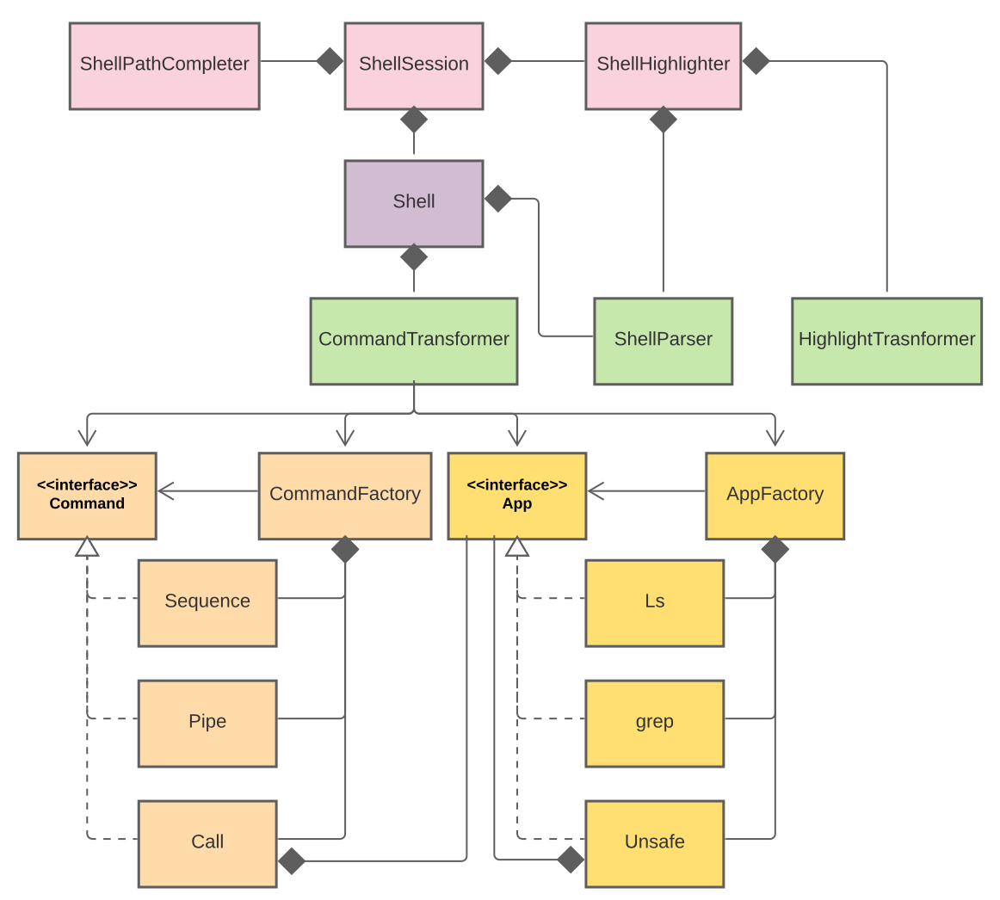
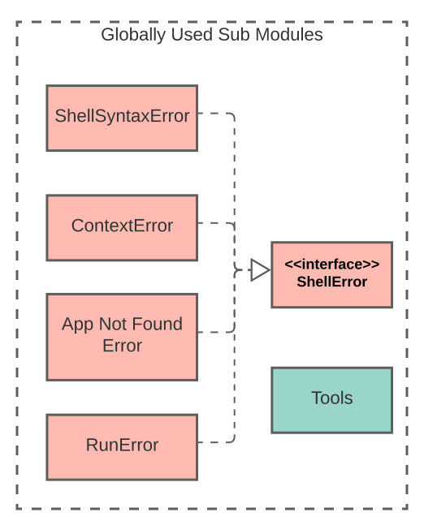

Documentation
Extra Functionality
Development
Reference
Our design includes a total of 7 modules.
Prompt
Shell
Parser
Commands
Apps
Exceptions (Global)
Common (Global)
The ones that we marked as Global can potentially be used in any module.
Global
Here is the UML diagram for our main modules.

blah blah blah add some text here
Exceptions and common.

blah blah blah add more text here.